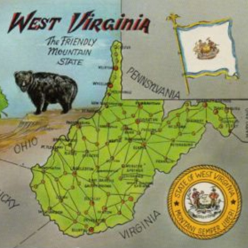

West Virginia Wedding
-
3:10Take Me Home, Country RoadsJohn Denver
-
3:33Drunk On YouLuke Bryan
-
3:45Home Is Where The Heart IsLady Antebellum
-
3:04Are You Gonna Kiss Me or NotThompson Square
-
3:09That’s My Kind of NightLuke Bryan
-
3:28PontoonLittle Big Town
-
5:20Southern Comfort ZoneBrad Paisley
-
3:29CruiseFlorida Georgia Line
-
3:10Gentle On My MindThe Band Perry
-
4:11Give It All We Got TonightGeorge Strait
-
3:46Make Me WannaThomas Rhett
-
2:49Barefoot Blue Jean NightJake Owen
-
3:51All Your LifeThe Band Perry
-
3:32Forever and Ever, AmenRandy Travis